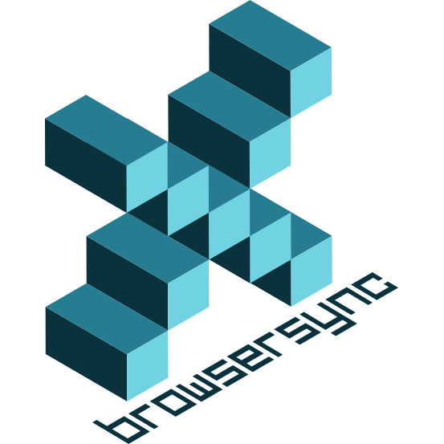
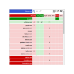

-
Stylus
Userstyles Manager.
-
Improve YouTube!
A YouTube Extension for all Browsers, that modifies video player & Youtube to give users more control over all aspects of playback & Youtube site.
-
Cookie AutoDelete
Control your cookies! This extension is inspired by Self-Destructing Cookies. When a tab closes, any cookies not being used are automatically deleted. Prevent tracking by other cookies and add only the ones you trust. Easily import and export your cookie whitelist.
-

xBrowserSyncA free tool for syncing browser data between different browsers and devices, built for privacy and anonymity.
-
Terms of Service; Didn't Read
“I have read and agree to the Terms” is the biggest lie on the web. We aim to fix that. “Terms of Service; Didn't Read” is a user rights initiative to rate and label website terms & privacy policies, from very good (class A) to very bad (class E).
-
uBlock Origin
A wide-spectrum blocker, which happens to be able to function as a mere "ad blocker". The default behavior of uBlock Origin when newly installed is to block ads, trackers and malware sites.
-

uMatrixPoint and click matrix to filter net requests according to source, destination and type. uMatrix does not guarantee that sites will work fine. It is for advanced users who can figure how to un-break sites, because essentially uMatrix is a firewall which works in relaxed block-all/allow-exceptionally mode out of the box.
-
Vimium
Vimium is a browser extension that provides keyboard-based navigation and control of the web in the spirit of the Vim editor.
-
Bitwarden
Easy to use, modern, cross platform and convenient.
-
Decentraleyes
A web browser extension that emulates Content Delivery Networks to improve your online privacy. It intercepts traffic, finds supported resources locally, and injects them into the environment. All of this happens automatically, so no prior configuration is required.
-
ClearURLs
This extension will automatically remove tracking elements from URLs to help protect your privacy when browse through the Internet.
 Abd el-twab M. Fakhry
Abd el-twab M. Fakhry
 +
+
 &
&  with
with